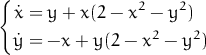

Here you can set:
- Start t That’s the initial value of the independent variable.
- End t That’s the end value of the independent variable — last solution will be computed at this point.
- H Initial step. Real step will be computed according to precision required.
- Hmin Minimum step allowed. If precision can’t be reached even for this step, solver fails.
- Hmax Maximum step allowed.
- Eps Absolute precision required on each step.
- P Relative precision measure. If some component’s absolute value becomes greater than P, it gets normalized when precision compared to Eps.
- Macros List with macros. Here we have
therefore the final system turns to be
 - Dep. var. - Start Value Initial values for each dependent
variable. In this particular case we have:

where , see Start t above.